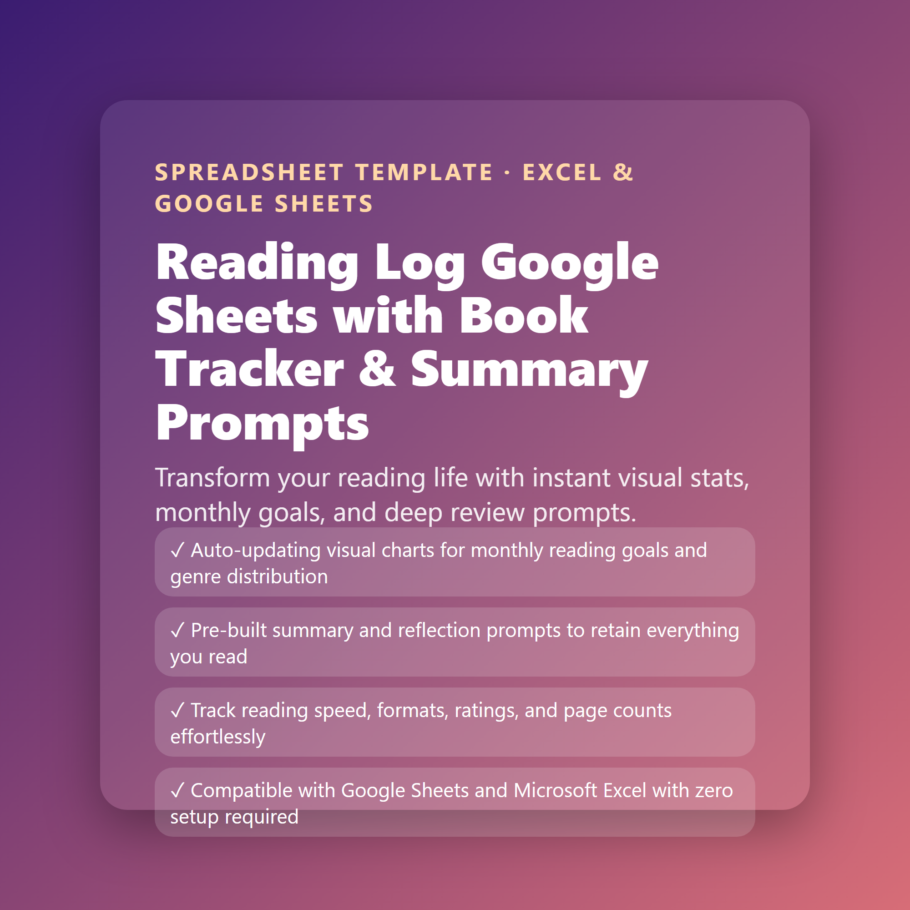

Reading Log Google Sheets Template | Book Tracker, Reading Journal & Reading Goals Dashboard for Book Lovers & BookTok
Transform your reading life with instant visual stats, monthly goals, and deep review prompts.
- Auto-updating visual charts for monthly reading goals and genre distribution
- Pre-built summary and reflection prompts to retain everything you read
- Track reading speed, formats, ratings, and page counts effortlessly
- Compatible with Google Sheets and Microsoft Excel with zero setup required
$5.49
Buy now · $5.49Includes: Reading Log Google Sheets with Book Tracker & Summary Prompts.xlsx · Reading Log Google Sheets with Book Tracker & Summary Prompts - Instructions.pdf
Take control of your reading life with the ultimate Reading Log Google Sheets Template, designed specifically for avid readers, BookTok creators, and book club members.
WHAT'S INCLUDED:
- Dashboard: Real-time visual stats, total books read, page count totals, and reading streak counters.
- Reading Log: Track titles, authors, genres, formats, start/finish dates, ratings, and statuses.
- Reviews & Prompts: Guided journaling prompts for core themes, favorite quotes, and takeaways.
- TBR List: Prioritize your upcoming reads and track book acquisition.
- Monthly Goals: Set and track monthly reading targets with automated completion percentages.
FEATURES:
- Instant compatibility with Google Sheets and Microsoft Excel.
- Fully automated formulas—no manual calculations required.
- Clean, aesthetic, and distraction-free design.
HOW IT WORKS:
1. Complete your purchase.
2. Download the PDF containing your secure template link.
3. Click 'Make a Copy' and start logging your books immediately.
Note: This is a digital product file. No physical item will be shipped.